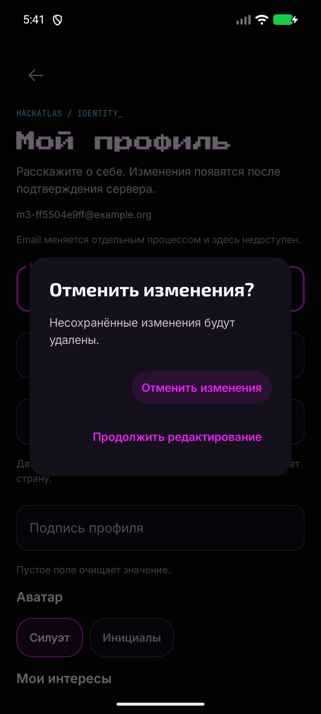
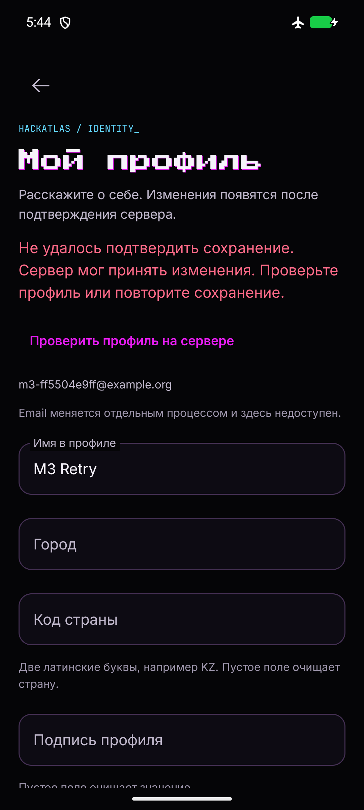

HACKATLAS / PROFILE EDIT_Редактирование профиля
Общие Compose-компоненты на реальном Android. Изменяются имя, город, код страны, подпись, аватар и интересы. Сохраняются только изменённые поля через действующий Starter PATCH /me. На снимках одноразовый аккаунт в локальном B2; токен/пароль в artifacts отсутствуют.
Нативная приёмка ещё не завершена. Кадры ниже получены на прежнем UI APK (4/6 групп PASS), до последней правки только auth restore. Финальная сборка: 228 тестов, build/lint/release PASS; системные ANR phone/SystemUI и отсутствующий phone service заблокировали новый UI-прогон. Нужен повтор всех шести групп на здоровом Android. 360dp/font130 и новый expired-notice пока не приняты.
Проверки · статус native acceptance · история прогонов · окружение · итоговое review · сообщение бэкендчика и mobile feedback.
Отмена и ошибка сохранения

Черновик не теряется без подтверждения

Ошибка · явный повтор
iOS: общий UI и прежний host подготовлены в исходниках, native build/Swift/Keychain/UI требуют Mac/iPhone. Предложенные email verification/reset из message18 здесь не реализованы и не считаются утверждённым API.